호텔 디자인 — 기능 가구가 아닌 인테리어 가구
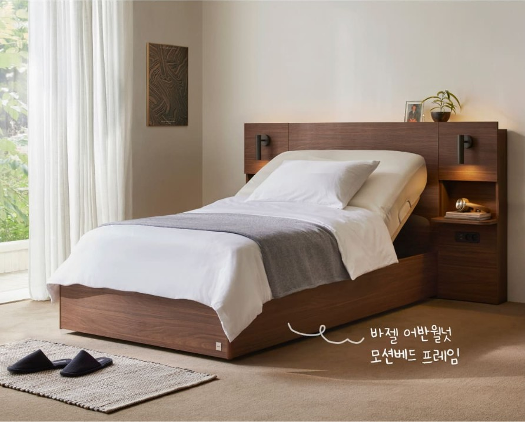
다리형 모션베드애쉬 원목 다리 145mm · 일룸 모션 최초
기존 박스형 모션베드는 아래가 막혀 답답해 보였습니다. 모어는 일룸 최초의 다리형 타입으로, 애쉬 원목 다리(145mm)가 바닥을 드러내 침실에 놓아도 기계가 아니라 인테리어 가구처럼 보입니다.

샌드 오크SO · Sand Oak — 베이지 계열 내추럴 우드 톤
모어 시리즈는 침대·협탁 전 라인업이 동일 색상으로 통일되어 있습니다. 화이트·아이보리·그레이 침구와 자연스럽게 어우러지며, 침구·소품을 바꿔도 베이스가 흔들리지 않습니다. 호텔 인테리어에서 가장 많이 쓰이는 중립 베이지 톤입니다.
라운드 코너캡모서리 마감재 — 호텔 실루엣 · 어린이 안전
모어는 각진 마감 대신 부드러운 라운드 곡선으로 처리해 호텔 침대 특유의 정돈된 실루엣을 살립니다. 덤으로 발가락·무릎이 부딪혀도 안전해 어린이가 있는 가정에도 적합합니다.
887mm 수평선헤드형 모션베드 · 협탁 윗선 일치
모션베드 헤드형·협탁, 두 제품 윗선이 모두 887mm로 통일됐습니다 (헤드형 기준 · 무헤드형은 별도). 나란히 놓으면 수평선이 한 줄로 이어져 시리즈 전체가 한 세트처럼 정돈된 호텔 침실 분위기가 완성됩니다. 침대 따로, 협탁 따로 산 느낌이 아니라 인테리어가 완성된 한 공간으로 보이는 게 모어 디자인의 핵심입니다.
자유 선택 — 내 맘대로 고르고, 바꿉니다
헤드형 / 무헤드형
| 헤드보드형 | 무헤드형 | |
|---|---|---|
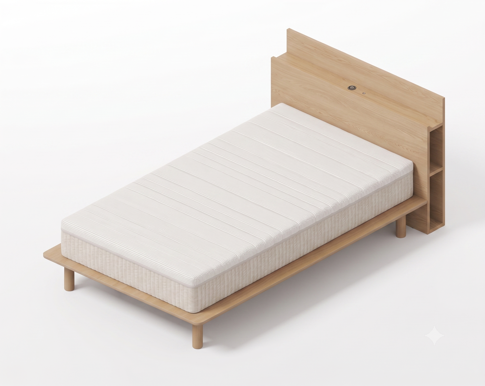 |
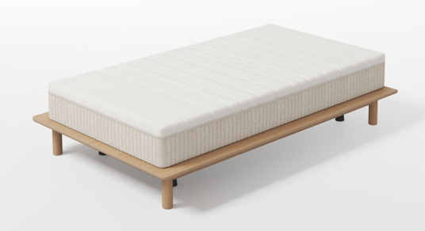 |
|
| 모델 | IBM0020A(스프링) · IBM0021A(메모리폼) | IBM0022A(스프링) · IBM0023A(메모리폼) |
| 사이즈 | SS 1,280 × 2,225 × 887mm | SS 1,280 × 2,060 × 482mm |
| 수납 | 머리맡 선반 · USB 충전 포트 내장 | 없음 |
| 실루엣 | 호텔 라이크 | 슬림 라인 |
| 적합 | 머리맡 정리 필요 | 좁은 침실 · 미니멀 |
혼자 시작 → 둘이 함께 → 사이공간 → 이사·확장
|
혼자 시작
혼자 살거나 신혼 직전 — SS 한 대로 출발
|
|
|---|---|
|
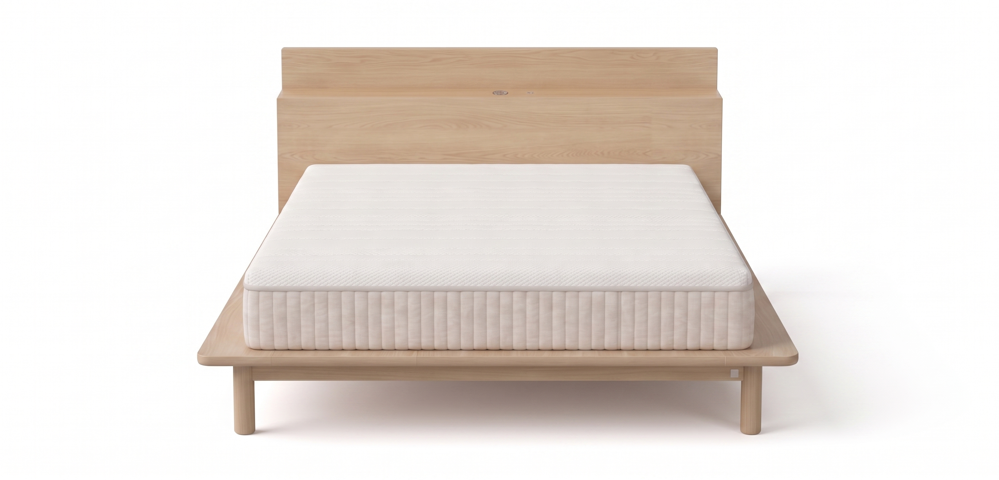  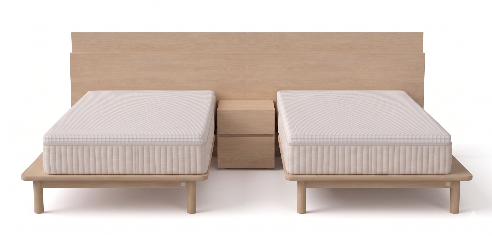 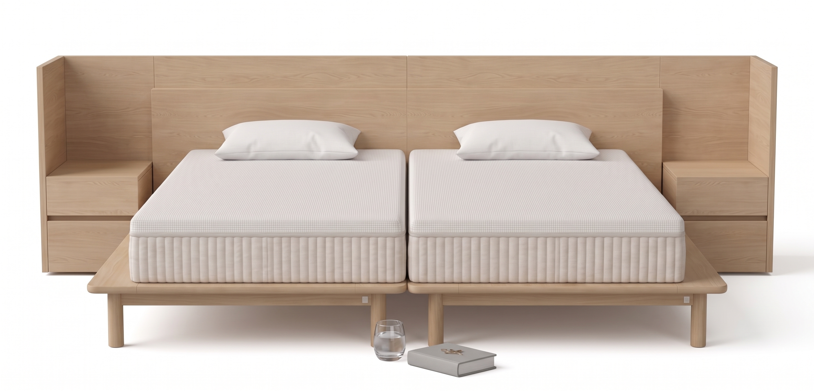 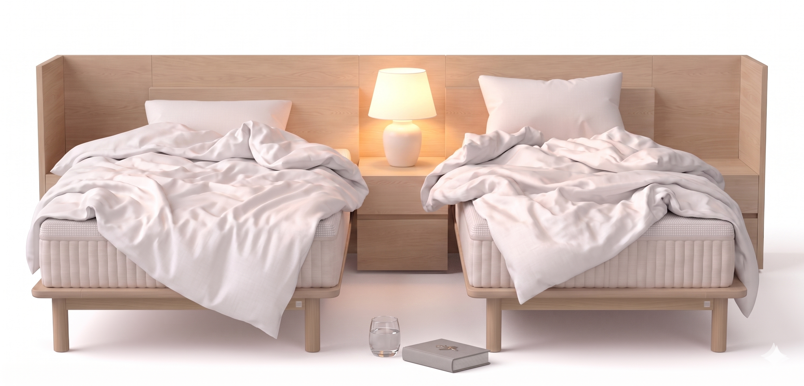 |
|
다리형 모션 · 다리형 일반 · 박스형 모션
외관은 모어 시리즈로 통일, 기능은 각자 선택할 수 있도록 설계된 라인업입니다.
| ① 다리형 모션 | ② 다리형 일반 | ③ 박스형 모션 | |
|---|---|---|---|
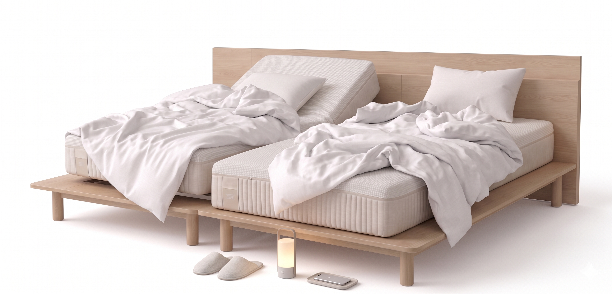 |
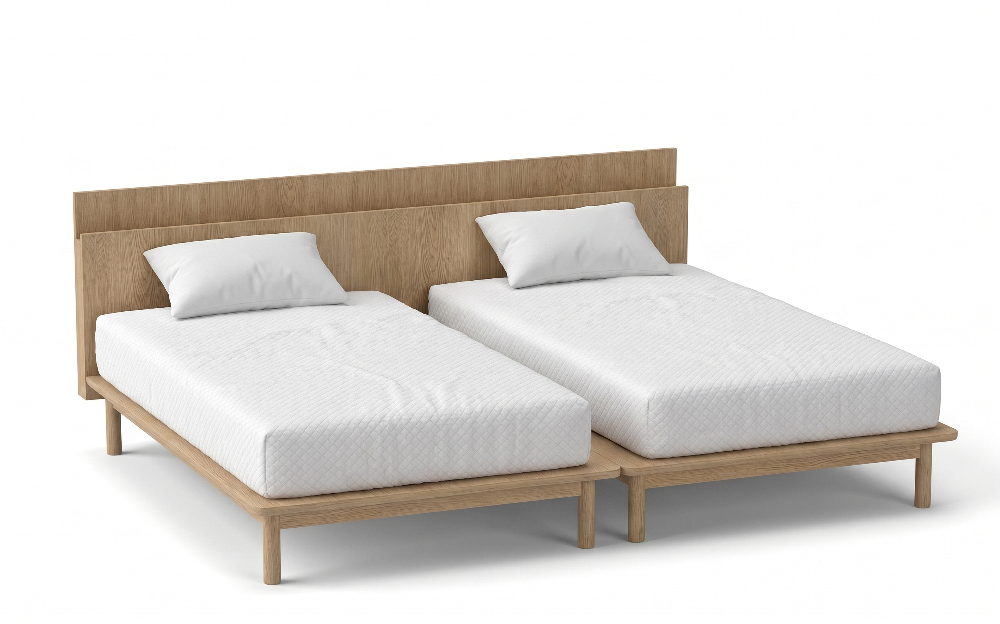 |
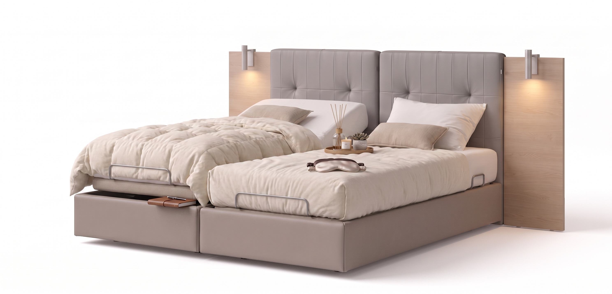 |
|
| 출시 시점 | 1차 출시 (현재) | 추후 출시 예정 | 추후 출시 예정 |
| 외관 | 다리형 · SO 톤 · 887mm | 다리형 · SO 톤 · 887mm | 박스형 · SO 톤 |
| 매트리스 | 모션 일체형 (헤이븐 플렉서블) | 일반 매트리스 (고객 선택) | 모션 일체형 |
| 모션 기능 | 4모드 (등판·다리·무중력·플랫) | 없음 (프레임만 모어 통일) | 4모드 (그 외 사양은 출시 시 확정) |
모어 시리즈 — 모션베드·협탁
| 다리형 모션 | 패널형 협탁 | 코너형 협탁 (L/R) | |
|---|---|---|---|
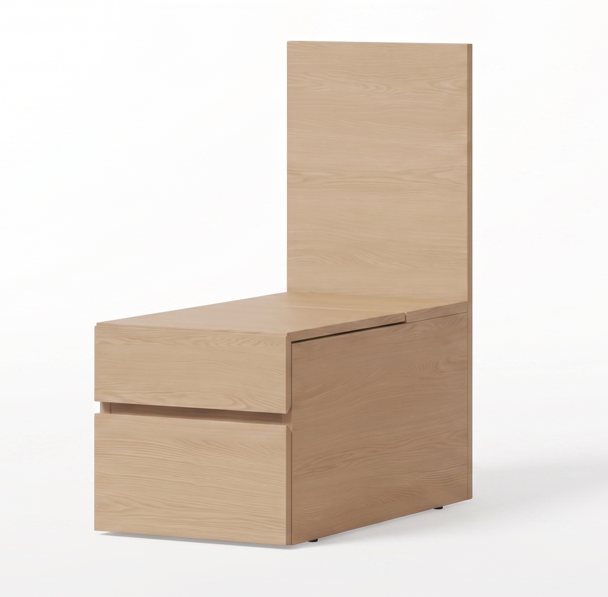 |
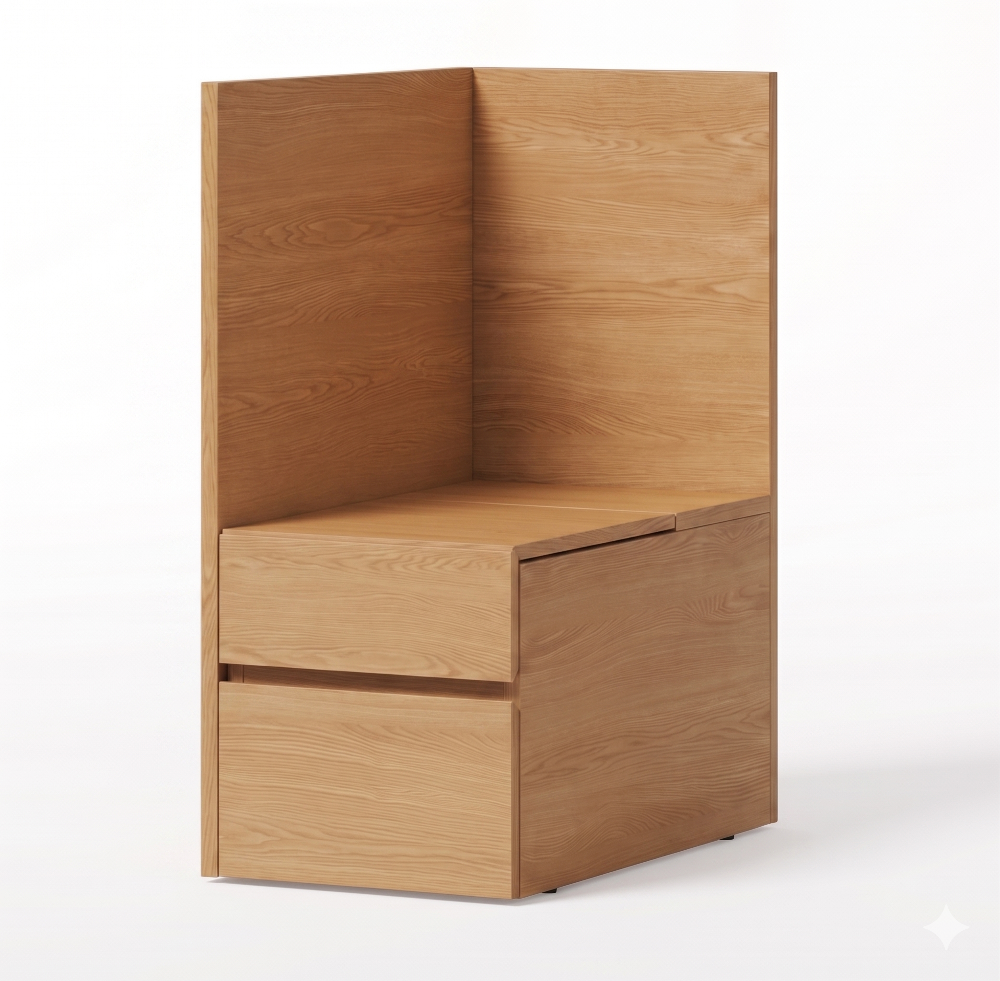 |
||
| 출시 시점 | 현재 출시 | 현재 출시 | 현재 출시 |
| 사이즈 | SS 1,280 × 2,225 (헤드형 기준) |
폭 400 | 폭 400 · L/R |
| 용도 | 잘 자고 · 4모드 자세로 독서·TV·휴식까지 |
침대 사이 단독 배치 · 모듈 사이 연결용 | 침대 양 끝 코너 마감 · 측면 가림판으로 외부 시선 차단 |